UDN
Search public documentation:
FBXStaticMeshPipelineCH
English Translation
日本語訳
한국어
Interested in the Unreal Engine?
Visit the Unreal Technology site.
Looking for jobs and company info?
Check out the Epic games site.
Questions about support via UDN?
Contact the UDN Staff
日本語訳
한국어
Interested in the Unreal Engine?
Visit the Unreal Technology site.
Looking for jobs and company info?
Check out the Epic games site.
Questions about support via UDN?
Contact the UDN Staff
FBX静态网格物体通道
概述
- 应用了包含贴图的材质的静态网格物体
- 自定义碰撞
- 多个UV集合
- 平滑组
- 顶点颜色
- LODs
- 多个单独的静态网格物体(也可以在导入时组合到一个单独的网格物体中)。
一般设置
支点
虚幻引擎中，网格物体的支点决定了执行任何变换(平移、旋转、缩放)时所围绕的点。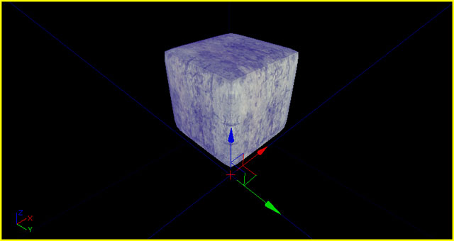
当从3D建模应用程序中导出网格物体时，支点总是位于原点处(0,0,0)。由于这个原因，所以最好在原点处创建网格物体，这样原点位于网格物体的一个角落上，从而当对齐到虚幻编辑器中的网格时可以进行正确的对齐。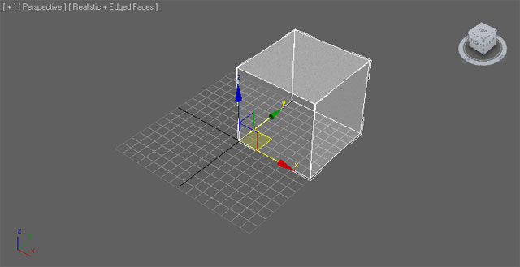
三角化
虚幻引擎中的网格物体必须进行三角化处理，因为图形硬件仅处理三角形。 有很多三角化网格物体的方法。
有很多三角化网格物体的方法。
- 仅使用三角形建模网格物体 — 最好的解决方案，提供对最终结果最大控制。
- 在3D应用程序中三角化网格物体 - 较好的解决方案，允许在导出之前进行整理和修改。
- 让FBX导出器三角化网格物体 - 一般解决方案，不允许进行清除整理但对于简单网格物体来说是有效的。
- 让导入器三角化网格物体 - 一般解决方案，不允许进行清除整理但对于简单网格物体来说是有效的。

UV贴图坐标
虚幻引擎3的FBX通道支持导入多个UV集合。对于静态网格物体来说，这一般仅用于一组用于漫反射的UVs集合和另一组单独的、不重叠的和光照贴图结合使用的UV集合。 设置使用FBX通道的静态网格物体的UV没有特殊要求。但是，对于设置需要考虑的静态网格物体的UVs来说，有一些通用的注意事项。关于设置静态网格物体的UVs的详细信息，请参照展开光照贴图的UVs页面。创建法线贴图
在大部分建模应用程序中可以通过创建低分辨率的渲染网格物体和高分辨率的细节网格物体来直接地为您的网格物体创建法线贴图。 高分辨率细节网格物体的几何体用于生成法线贴图的法线。请参照您使用的软件的文档获得关于如何生成法线贴图的确切过程。
高分辨率细节网格物体的几何体用于生成法线贴图的法线。请参照您使用的软件的文档获得关于如何生成法线贴图的确切过程。
材质
在外部应用程序中建模的应用到网格物体上的材质将会随着网格物体一同导出，然后会一同导入到UnrealEd中。这简化了导入过程，因为贴图不必再单独地导入到UnrealEd中，不需要再创建及应用材质等。当使用FBX通道时导入过程可以执行所有这些动作。 这些材质也需要以特殊的方式设置，尤其是当网格物体具有多个材质或者网格物体上的材质的顺序很重要时(也就是，对于一个角色模型，材质0需要用于躯体部分，材质1需要用于头部)。 关于设置材质进行导出的完整细节，请参照FBX材质通道页面。碰撞
简单的碰撞几何体对于优化游戏中的碰撞检测是很重要的。虚幻引擎3在静态网格物体编辑器中提供了创建碰撞几何体的基本工具。但是，某些时候，最好还是通过在您的3D建模应用程序中创建自定义的碰撞几何体然后再将其随同渲染网格物体导出来进行处理。一般，这适用于任何不需要和具有开放区域或凹陷区域的网格物体进行碰撞的对象。 比如：- Doorway(门口)网格物体
- 具有窗框的墙壁。
- 形状奇怪的网格物体。
 导入器基于碰撞网格物体的名称识别碰撞网格物体。碰撞命名语法应该是：
导入器基于碰撞网格物体的名称识别碰撞网格物体。碰撞命名语法应该是：
- UBX_[RenderMeshName] - 在Max中使用 Box(盒子) 对象来创建盒式碰撞，或者在Maya 中使用 Cube(立方体) 多边形图元来创建盒式碰撞。您不能以任何方式移动顶点或者使其发生变形来使它成为不是正规图元的其它形状，否则它将不能正常工作。
- USP_[RenderMeshName] - 球体可以使用 Sphere(球体) 对象类型进行创建。球体根本不需要有太多的分段(分为 8 段比较合适)，它将会为碰撞转换为真正的球体。就像盒子一样，您不能到处移动单独的顶点。
- UCX_[RenderMeshName] - 凸面体可以是任何完全闭合的凸面 3D 图形。比如，一个盒子可以是一个凸面物体。下面的图表解释了什么是凸面体及什么不是凸面体：

RenderMeshName 名称必须同3D应用程序中和碰撞网格物体相关联的渲染网格物体的名称一样。所以，如果您在3D应用程序中渲染网格物体命名为 Tree_01 ，那么在场景中和那个网格物体相关的碰撞网格物体一样，命名为 UCX_Tree_01 ，然后将其随同渲染网格物体导入到FBX文件中。
注意目前球体仅应用于钢体碰撞、虚幻的零粗细踪迹（比如武器），而不应用于非零粗细踪迹（比如玩家运动）。同时，如果静态网格物体进行了非同一缩放，那么球体和盒子将不再有效。一般来说，您或许想创建 UCX 图元。
一旦您设立了碰撞对象，您便可以把图形及碰撞网格物体导入到同一个.FBX文件中。当您把 .FBX 文件导入到虚幻编辑器时，它将会找到碰撞网格物体，把它从图形上移除，并将其转换为碰撞模型。
注意： 当一个物体的碰撞是由多个凸面的外壳定义时，这些外壳彼此之间没有相互交叉时会获得最好的效果。比如，如果一个棒棒糖的碰撞是通过两个凸面外壳来定义的，一个用于糖果另一个用于手棒，那么在两者之间应该留有空隙，如下所示：
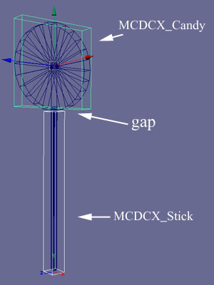
把一个非凸面网格物体分解为凸面图元是一个非常复杂的操作，并且可能会产生不可预测的效果。另一个方法是在 3D MAX 或 Maya 中把碰撞模型分解为凸面块。顶点颜色
可以通过使用FBX通道来转换静态网格物体的顶点颜色。不需要特殊设置。
导出网格物体
Combine Meshes 设置指定了组合网格物体，否则导入过程将会把多个静态网格物体划分为目标包中的多个资源，。
3dsMax
- 在视口中选中要导出的网格物体。

- 在 File(文件) 菜单中选择 Export Selected(导出选中项) (或者您不管选中项是什么而是想导出场景中的所有资源，那么则选择 Export All(导出所有) ) 。

- 选择要将网格物体导出到的FBX文件的位置及名称，并点击
 按钮。
按钮。

- 在 FBX Export(FBX导出) 对话框中设置适当的选项，然后点击
 按钮来创建包含网格物体的FBX文件。
按钮来创建包含网格物体的FBX文件。
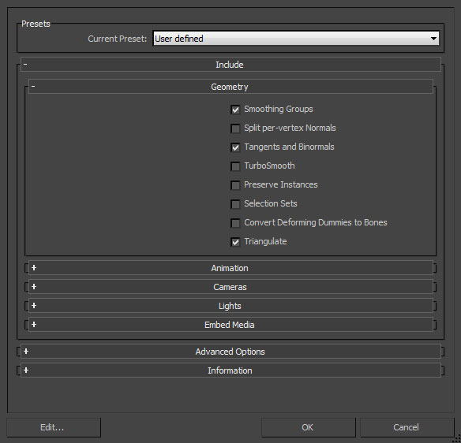
- 在视口中选中要导出的网格物体。
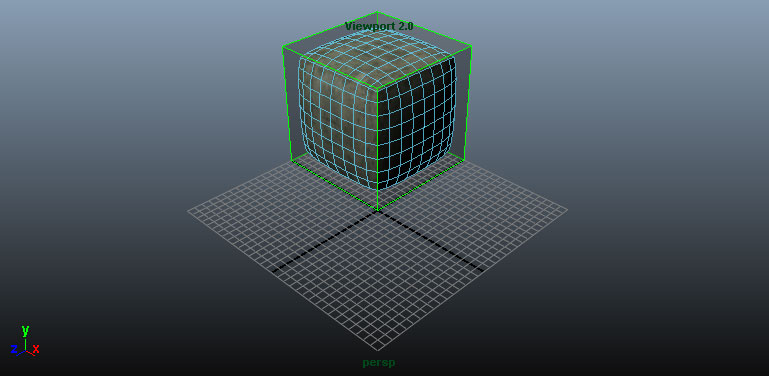
- 在 File(文件) 菜单中选择 Export Selected(导出选中项) (或者您不管选中项是什么而是想导出场景中的所有资源，那么则选择 Export All(导出所有) ) 。

- 选择用于导入网格物体的FBX文件的位置和名称，并在 FBX Export(FBX导出) 对话框中设置适当的选项，然后点击
 按钮来创建包含网格物体的FBX文件。
按钮来创建包含网格物体的FBX文件。

导入网格物体
- 在内容浏览器中点击
 按钮。再打开的文件浏览器中导航到您想导入的文件并选中它。 注意: 您可以在下拉菜单中选择 来过滤不需要的文件。
按钮。再打开的文件浏览器中导航到您想导入的文件并选中它。 注意: 您可以在下拉菜单中选择 来过滤不需要的文件。

- 在 Import(导入) 对话框中选择适当的设置。但大部分情况下默认设置就足以满足需求。请参照 FBX导入对话框部分获得关于这些设置的完整信息。

- 点击
 按钮来导入网格物体。如果导入过程成功，那么将会在内容浏览器中显示最终的网格物体、材质和贴图。
按钮来导入网格物体。如果导入过程成功，那么将会在内容浏览器中显示最终的网格物体、材质和贴图。

通过在静态网格物体编辑器中查看导入的网格物体并启用显示碰撞功能，您就可以判断该导入过程是否按照期望的方式进行了。

静态网格物体LOD
 可以使用FBX通道来 导入/导出 这些LOD网格物体。
可以使用FBX通道来 导入/导出 这些LOD网格物体。
LOD设置
一般 一般，LODs通过创建具有不同复杂程度的模型来进行处理，包括从具有完整细节的基本网格物体到最有最低细节的LOD网格物体。这些LOD网格物体应该和同样的支点对齐并占用同样的空间。每个LOD网格物体可以分配完全不同的材质，包括不同数量的材质。这意味着基本网格物体可以使用多个材质来在近距离处产生理想的细节质量；但低细节网格物体可以使用一个单独的材质，因为细节不是那么显著。 3dsMax- 选中所有网格物体(基本网格物体和LODs - 选中顺序不重要)，然后从 Group(组) 菜单中选择 Group(组合) 命令。
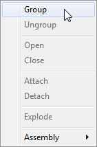
- 在打开的对话框中输入新的组的名称，并点击
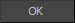
按钮来创建该组。
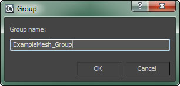
- 点击
 按钮来查看 Utilities(工具) 面板，然后选择 Level of Detail（细节层次级别） 工具。 注意: 您可能需要点击
按钮来查看 Utilities(工具) 面板，然后选择 Level of Detail（细节层次级别） 工具。 注意: 您可能需要点击  并从列表中选择它。
并从列表中选择它。

- 选中该组合，点击
 按钮来创建新的LOD集合，并将选中组中的网格物体添加到它内部。这些网格物体将会根据它们的复杂度自动地排序。
按钮来创建新的LOD集合，并将选中组中的网格物体添加到它内部。这些网格物体将会根据它们的复杂度自动地排序。

- 选中所有网格物体(基础网格物体和LODs)，按照从基础网格物体向下倒最低级LOD的书序进行选择。按顺序选择很重要，以便可以在复杂度方面以正确的顺序添加它们。然后从 Edit(编辑) 菜单中选择 Level of Detail（细节层次级别） > Group（分组） 命令。

- 现在所有的网格物体都应该分组到了LOD Group（LOD组）下。

导出LODs
要想导出静态网格物体LODs： 3dsMax- 选择构成LOD集合和碰撞几何体的网格物体组。

- 遵循导出基本网格物体所使用的同样的导出步骤进行操作(正如在上面的导出网格物体部分所描述的 )。确保在FBX导入器属性中启用了动画导出功能。这是导出LODs所需要的设置。
- 选择LOD组和任何碰撞几何体。
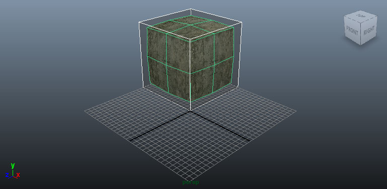
- 遵循导出基本网格物体所使用的同样的导出步骤进行操作(正如在上面的导出网格物体部分所描述的 )。确保在FBX导入器属性中启用了动画导出功能。这是导出LODs所需要的设置。
导入LODs
在内容浏览器中，静态网格物体LODs可以随同基础网格物体一同导入，或者可以通过AnimSet编辑器单独地导入这些静态网格物体LODs。 网格物体和LODs同时导入- 在内容浏览器中点击 按钮。再打开的文件浏览器中导航到您想导入的文件并选中它。 注意: 您可以在下拉菜单中选择 来过滤不需要的文件。
- 在 Import(导入) 对话框中选择适当的设置。默认设置应该足以满足需求，因为已经启用了 Import LODs(导入LODs) 项。 注意: 当导入LODs时，导入的网格物体的名称将会遵循默认的命名规则。请参照 FBX导入对话框部分获得关于这些设置的完整信息。

- 点击 按钮来导入网格物体和LOD。如果导入过程成功，那么将会在内容浏览器中显示最终的网格物体、材质和贴图。你可以看到网格物体下面的文字显示为 4 LODs(4个LODs) 。
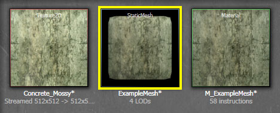
通过在静态网格物体编辑器中查看导入的网格物体，您可以实用工具条中的
 按钮来循环查看LODs。
按钮来循环查看LODs。
- 通过在内容浏览器中双击基础网格物体或者右击并选择 Edit Using AnimSet Viewer(使用动画集查看器编辑) 来在静态网格物体编辑器中打开基础网格物体。

- 在 Mesh（网格物体） 菜单中，选择 Import Mesh LOD(导入网格物体LOD) 。

- 在文件浏览器中导航到包含这个LOD网格物体的 FBX 文件，并选择它。 注意： 您可能需要将文件格式设置为 才能看到您的文件。

- 在 Import LOD（导入LOD） 对话框中，从下拉菜单中选中您想导入的网格物体的LOD级别。按下
 按钮来导入LOD网格物体。
按钮来导入LOD网格物体。

- 如果导入过程成功，那么将会通知您，并且在工具条按钮
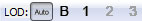
中应该启用了刚导入的LOD对应的按钮。
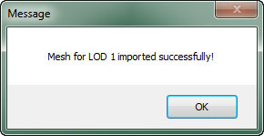
- 针对您想导入的每个LOD网格物体重复这个过程。
- 一旦导入了所有的LOD网格物体，您可以通过使用工具条中的 按钮来预览这些LOD网格物体。